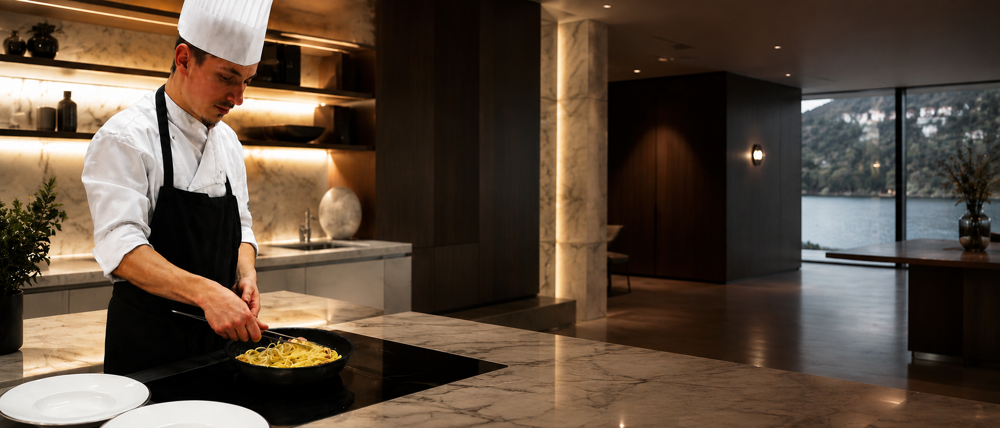
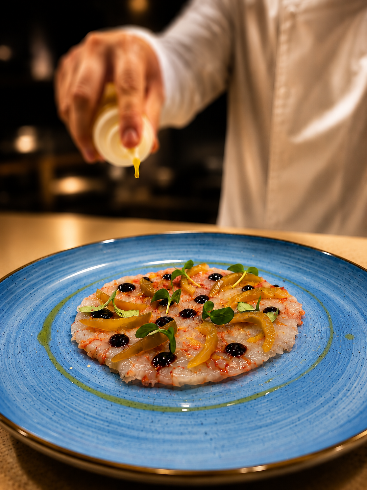
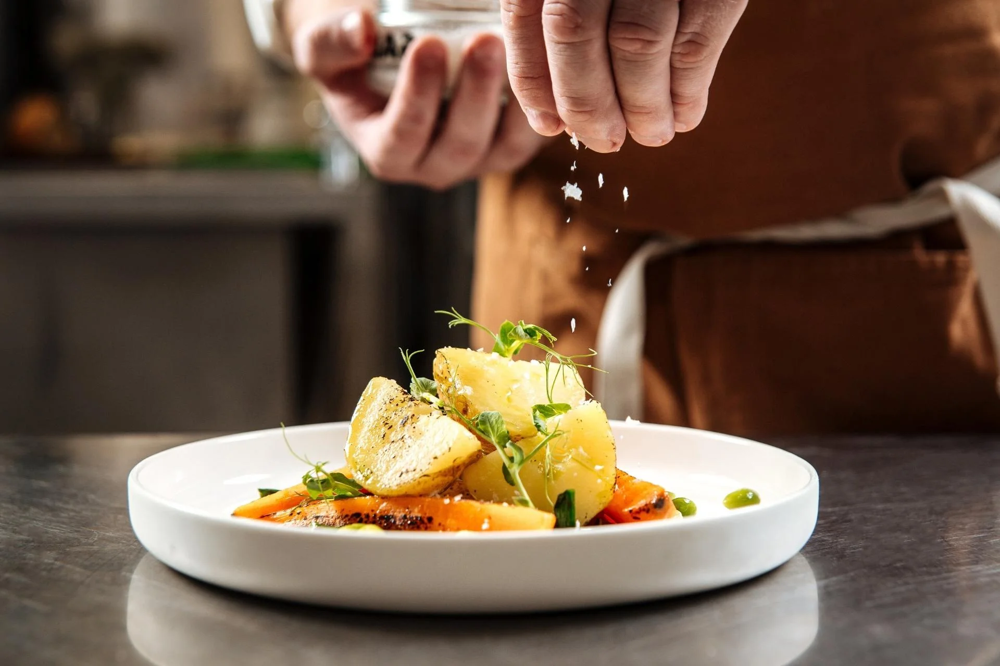
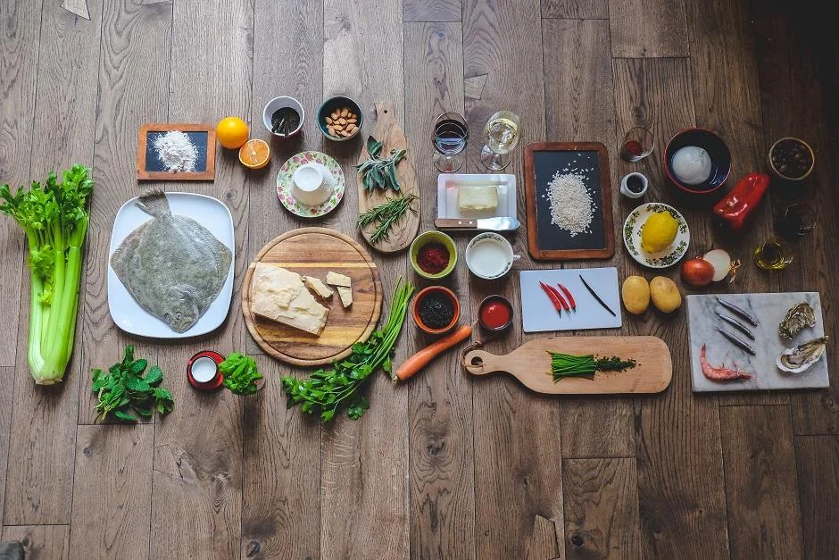
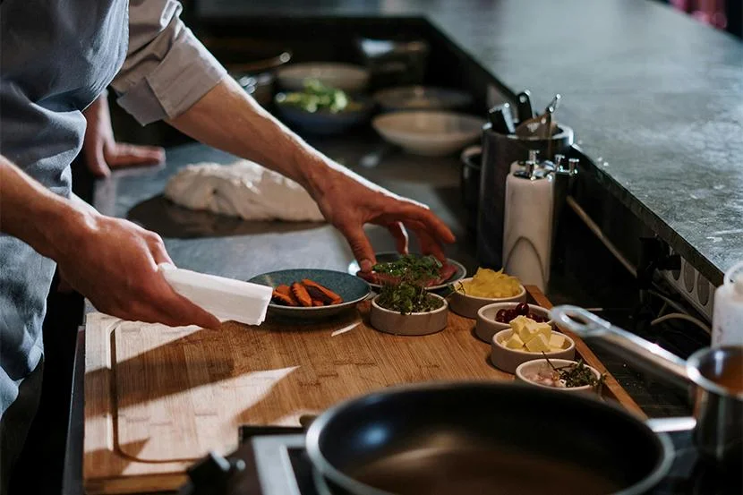
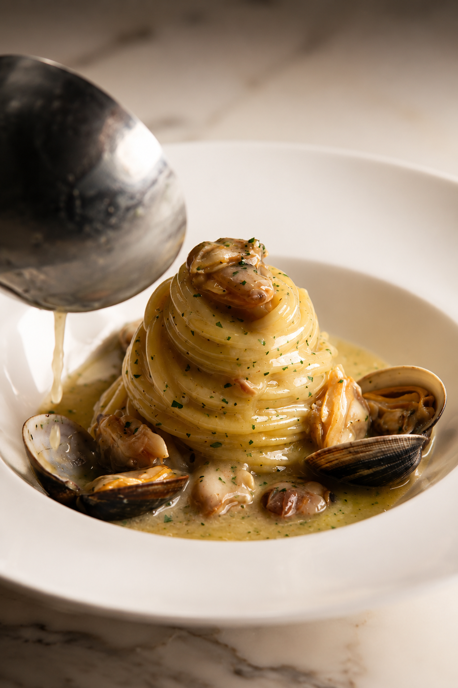
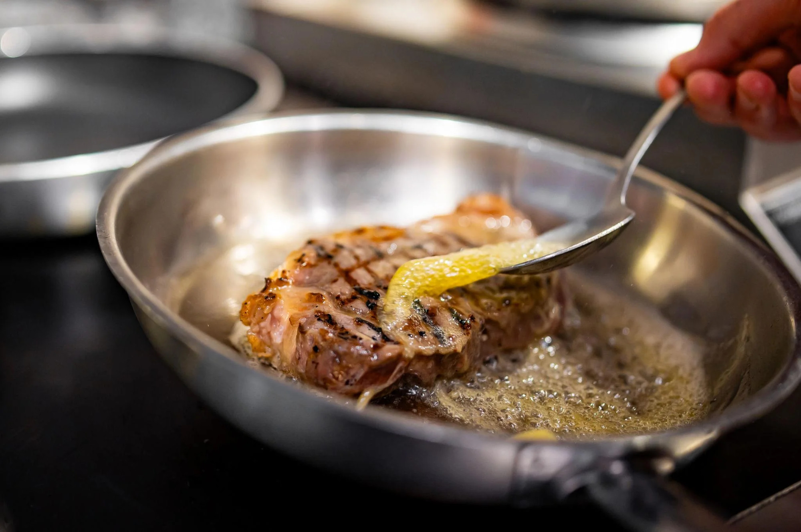
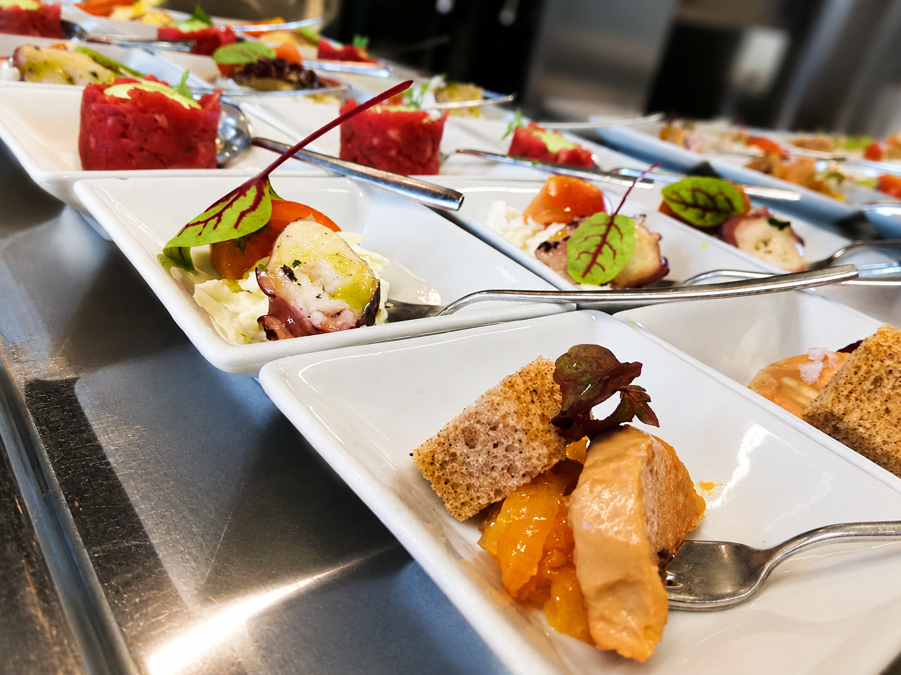
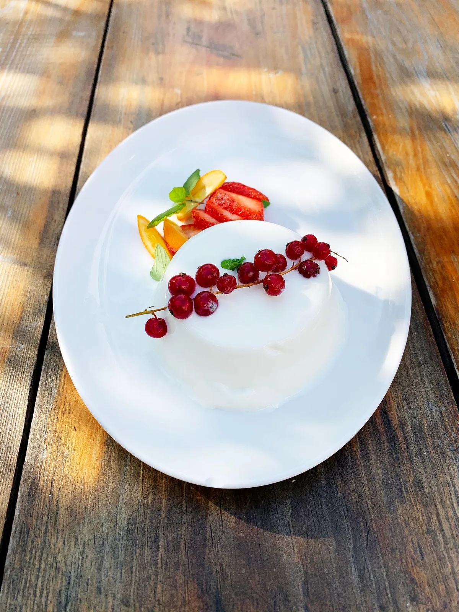

Private Chef · Esperienza su misura
Ogni cena nasce per una sola tavola.
La tua.
Chef Yuri porta la cucina d'autore nella privacy di casa vostra — per chi cerca un momento su misura, non un servizio.
Chi sono
Chef Yuri
Anni di cucine esigenti, oggi al servizio di una sola tavola: la vostra.
Ho imparato il mestiere dove l'errore non è ammesso: tecnica, disciplina, rispetto per la materia prima. Il motivo per cui cucino ancora oggi l'ho trovato fuori da quelle cucine.
Non mi interessa lo spettacolo del piatto, ma il momento che si crea attorno alla tavola. Cucinare in una casa, per poche persone, cambia il ritmo e il senso di ciò che viene servito.
Non lavoro con un menù fisso. Ascolto prima chi siete e cosa desiderate, poi costruisco un percorso che nasce da quella conversazione.
"Non cucino per stupire. Cucino per raccontare qualcosa di vero."

Esperienze
Sette modi di vivere l'esperienza
Ogni occasione ha una forma diversa. Scegli quella più vicina alla vostra, o scrivetemi per costruirne una su misura.


Come funziona
Quattro passaggi, nessuna complicazione
01
Racconta la tua occasione
Scrivimi data, numero di ospiti e il contesto: una cena, un compleanno, un evento.
02
Costruiamo il menù insieme
Una conversazione, non un listino: ascolto gusti, allergie e desideri prima di proporre un percorso.
03
Preparo e servo tutto
Arrivo con spesa e attrezzatura. Cucino nella vostra cucina, servo alla vostra tavola.
04
Vivi l'esperienza
Restate ospiti dall'inizio alla fine. Io penso al resto, compreso il riordino.
Galleria
Una selezione, non un archivio








01 / 09
Chef che impiatta
Il gesto finale prima che il piatto arrivi in tavola: fior di sale su patate, salmone e piselli.
02 / 09
Ingredienti
Ogni preparazione parte da qui: materie prime selezionate, disposte e pronte.
03 / 09
Al tagliere
Erbe, verdure e spezie di stagione, preparate a mano prima del servizio.
04 / 09
Il piatto signature
Spaghetti con vongole e cozze — il piatto che porta la mia firma.
05 / 09
Il gesto
Tecnica al servizio del gusto: succo di limone su una tartare appena scottata.
06 / 09
La tavola pronta
Ogni piatto trova il suo posto prima che gli ospiti si siedano.
07 / 09
Il momento conviviale
Quello che conta davvero accade attorno alla tavola, non nel piatto.
08 / 09
Il dolce
Panna cotta con ribes rosso, fragole e agrumi — la chiusura del percorso.
09 / 09
Il brindisi
L'ultimo gesto della serata, quello che resta più a lungo nel ricordo.
01 / 09
Chef che impiatta
Il gesto finale prima che il piatto arrivi in tavola: fior di sale su patate, salmone e piselli.
02 / 09
Ingredienti
Ogni preparazione parte da qui: materie prime selezionate, disposte e pronte.
03 / 09
Al tagliere
Erbe, verdure e spezie di stagione, preparate a mano prima del servizio.
04 / 09
Il piatto signature
Spaghetti con vongole e cozze — il piatto che porta la mia firma.
05 / 09
Il gesto
Tecnica al servizio del gusto: succo di limone su una tartare appena scottata.
06 / 09
La tavola pronta
Ogni piatto trova il suo posto prima che gli ospiti si siedano.
07 / 09
Il momento conviviale
Quello che conta davvero accade attorno alla tavola, non nel piatto.
08 / 09
Il dolce
Panna cotta con ribes rosso, fragole e agrumi — la chiusura del percorso.
09 / 09
Il brindisi
L'ultimo gesto della serata, quello che resta più a lungo nel ricordo.
Come si svolge una serata
Sette passaggi, una sola serata
Richiesta
Menu
Arrivo
Preparazione
Servizio
Pulizia
Fine esperienza
Prenotazione
Raccontami la tua occasione
Compila il modulo con qualche dettaglio: data, numero di ospiti e il contesto dell'evento. Rispondo personalmente entro 48 ore per fissare una prima conversazione.
info@chefyuri.it
Su richiesta — Italia ed estero